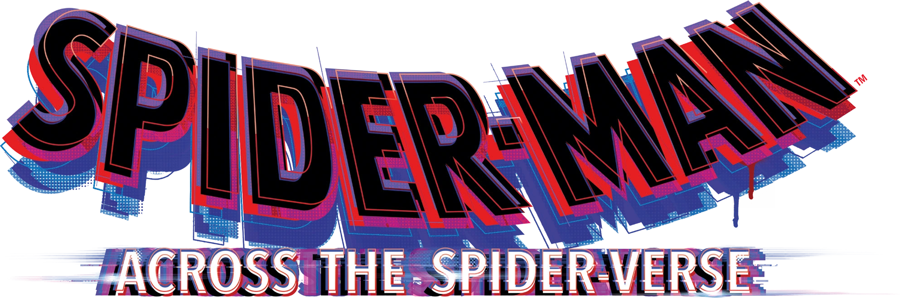
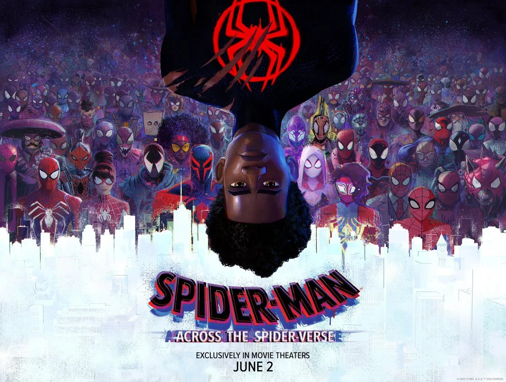
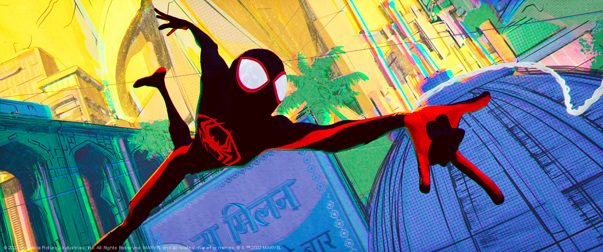
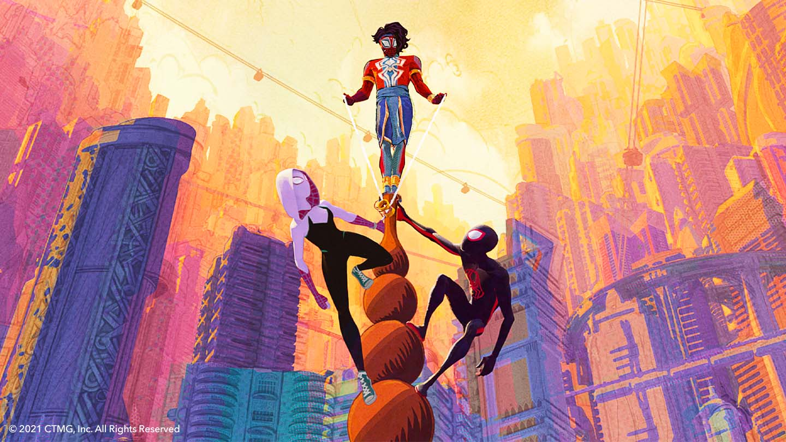
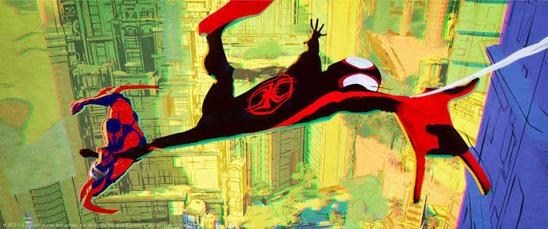
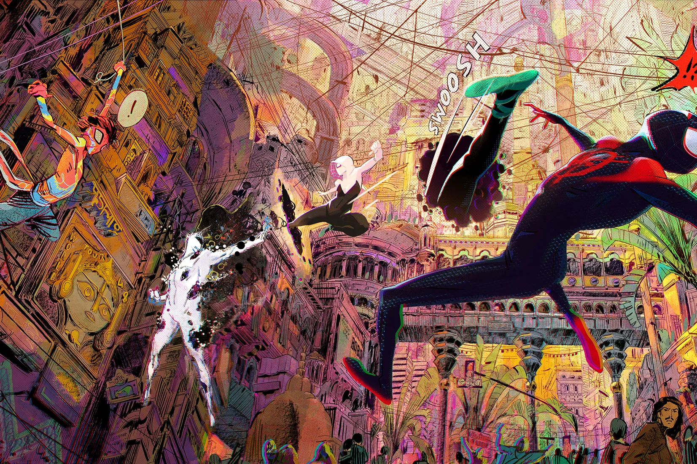

Spider-Man: Across The Spider-Verse Synopsis
"Spider-Man: Across the Spider-Verse" is an animated superhero film that serves as the sequel to "Spider-Man: Into the Spider-Verse." The film continues the story of Miles Morales, a young Spider-Man who navigates the multiverse. He teams up with Gwen Stacy and encounters various Spider-People from different dimensions, each with their unique abilities and designs.
Miles Morales returns for the next chapter of the Oscar®-winning Spider-Verse saga, Spider-Man™: Across the Spider-Verse (2018, Best Animated Film, Spider-Man™: Into The Spider-Verse). After reuniting with Gwen Stacy, Brooklyn’s full-time, friendly neighborhood Spider-Man is catapulted across the Multiverse, where he encounters the Spider Society, a team of Spider-People charged with protecting the Multiverse’s very existence. But when the heroes clash on how to handle a new threat, Miles finds himself pitted against the other Spiders and must set out on his own to save those he loves most. Anyone can wear the mask – it’s how you wear it that makes you a hero.
Spider-Man: Across The Spider-Verse Full Trailer
Spider-Man: Across The Spider-Verse Gallery



